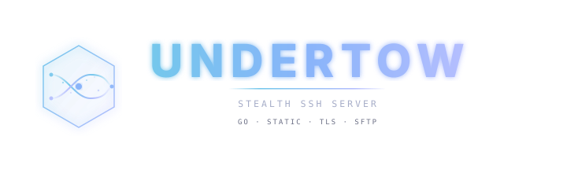

Stealth SSH Server for Penetration Testing
Reverse shells, bind shells, SFTP file transfer, and full SSH port forwarding in a single static binary under 1.5MB. Optional TLS wrapping hides SSH inside HTTPS to evade DPI/IDS on the wire.
Full SSH server capabilities -- interactive shells, file transfer, tunneling, and evasion -- compiled into a single zero-dependency binary.
Full PTY support with Ctrl+C, tab completion, and command history. Linux uses creack/pty, Windows 10+ uses ConPTY. No more fighting with raw netcat shells.
Reverse mode dials home through firewalls. Bind mode listens on target. Both support the full SSH feature set -- PTY, SFTP, and port forwarding work identically.
Built-in SFTP subsystem for file transfer. Upload tools, download loot, exfiltrate data -- all through the same SSH connection. No separate channel needed.
Local, remote, and dynamic SOCKS port forwarding. Pivot through the target to reach internal networks, expose services, or tunnel traffic.
Optional TLS wrapping with ALPN negotiation and SNI spoofing. On the wire it looks like HTTPS -- the SSH banner never appears in plaintext.
Build script auto-generates a handler that starts the listener, displays credentials, and shows the SSH command when a callback arrives.
Clean, focused codebase across 6 source files. Static compilation, build tags for platform support, timing-safe authentication.
Entry point, SSH server setup, compile-time variables via ldflags
Auth handlers, port forwarding, SFTP, TLS cert generation, reverse dial
Session dispatcher for PTY, command execution, and forwarding-only requests
Unix PTY allocation via creack/pty with build tag gating
Windows ConPTY with ssh-shellhost fallback for older builds
Build wrapper with Catppuccin output, handler generation, UPX support
Build a reverse or bind shell with a single command. The handler script manages credentials and connections for you.